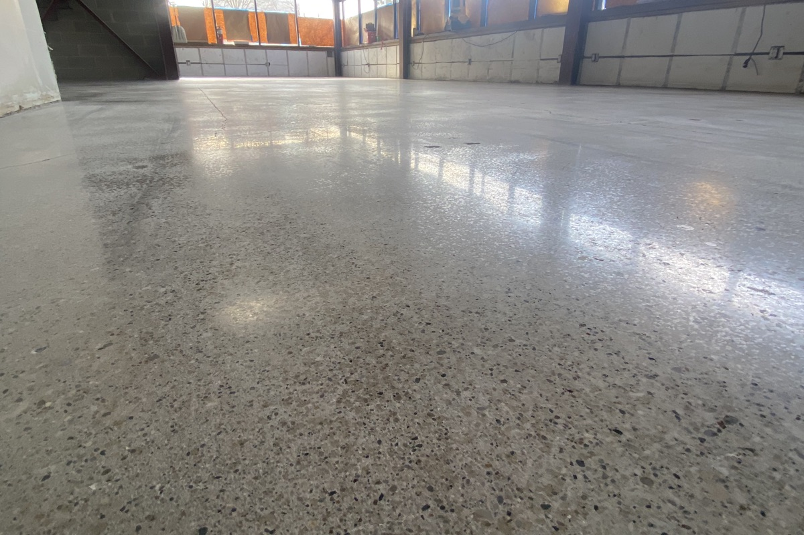

Polished Concrete
Sleek, Durable, Low-Maintenance Flooring

Polished Concrete
Professional Concrete Polishing
SaniCrete offers professional polished concrete flooring for cold storage facilities, distribution centers, warehouses, and commercial environments. Using progressive diamond grinding and densification, we transform ordinary concrete into a high-gloss, incredibly durable surface that stands up to heavy traffic and demanding conditions.
Polished concrete is especially popular in cold storage and distribution environments where a dense, non-porous surface resists moisture penetration, handles forklift traffic with ease, and requires minimal maintenance compared to coated or sealed alternatives.
Key Benefits
- Extremely durable & abrasion resistant
- Low maintenance — no waxing or recoating
- High light reflectivity for improved visibility
- Moisture resistant surface
- Ideal for forklift & heavy traffic areas
- Dust-proof — eliminates concrete dusting
- Environmentally friendly — no coatings or chemicals
- Long lifespan with minimal upkeep
Ideal Applications
- Cold storage & freezer facilities
- Distribution centers & warehouses
- Retail & showroom spaces
- Loading docks
- Office & lobby areas
- Light manufacturing
| Technical Specifications | |
|---|---|
| Process | Diamond grinding & densification |
| Finish Levels | Matte to high-gloss mirror finish |
| Hardness | 7-9 Mohs (after densification) |
| Light Reflectivity | Up to 30% increase |
| Maintenance | Dust mop & occasional wet mop |
| Lifespan | 20+ years with proper maintenance |
📥 Downloads
Ready to Polish Your Facility's Floors?
Contact us for a free consultation. We assess your concrete and recommend the right finish level.
Contact Us →